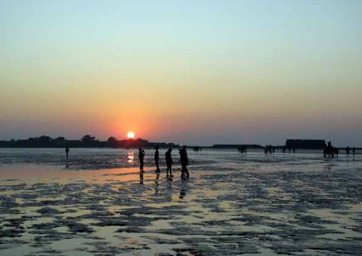
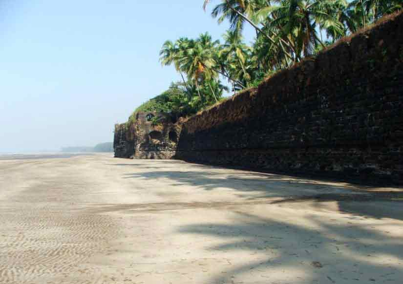

Revdanda Beach is a very isolated beach in this region. The sand is black in colour, which gives it a unique look. The beach is integral part of people in Revdanda, its one of the places where people come to relax after days heavy work. As Revdanda lies in coastal region fish curry and rice forms an important part of diet of the people of this region. Revdanda is a village near Alibag, India. It is 17 km away from Alibag and 125 km away from Mumbai. Datta Mandir is located in the chaul part of Revdanda. It is the Mandir of Lord "Datta" which mainly the maharashtrian people worship. The mandir is on top of the peak, the road leading to the mandir is of almost 1500 steep stairs. From this temple we can see entire region around revdanda. And it is believed that it was built in Raje Shivaji's reign to keep an eye on enemy. There is huge celebration for five days in a year, it starts on birthday of lord Datta and continues for 5 days. During this period students are given holiday.

